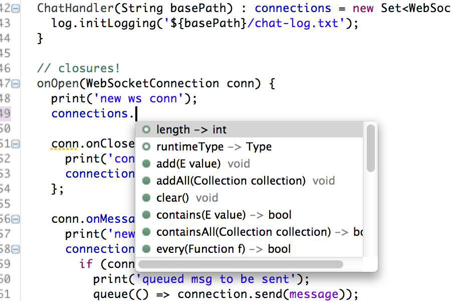
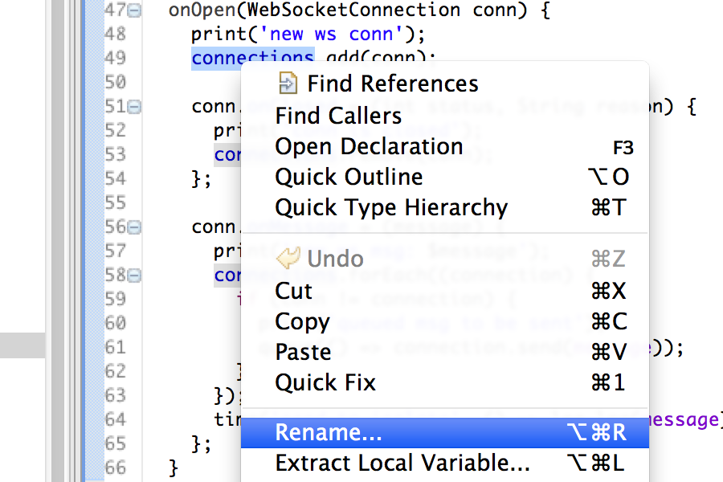
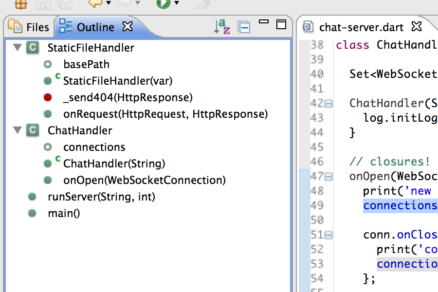
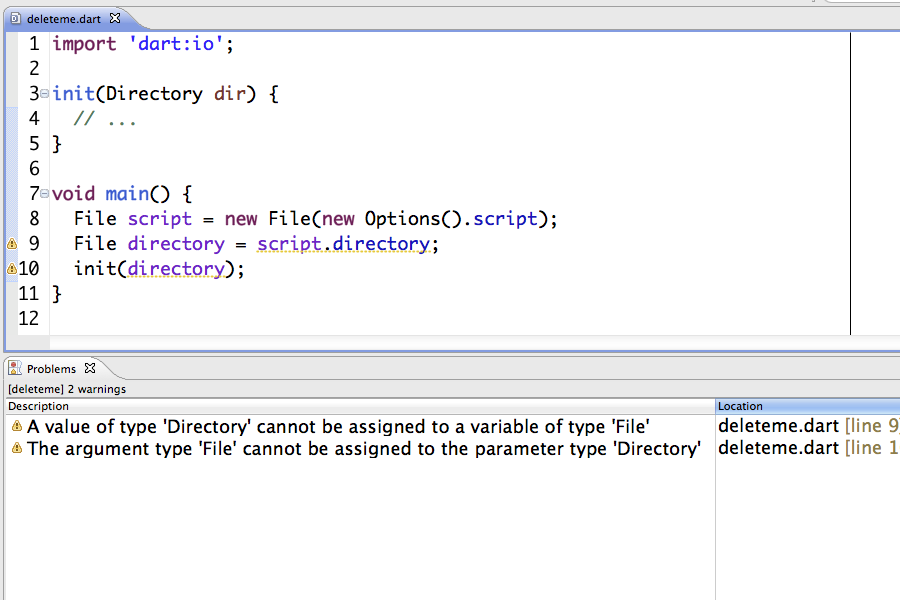
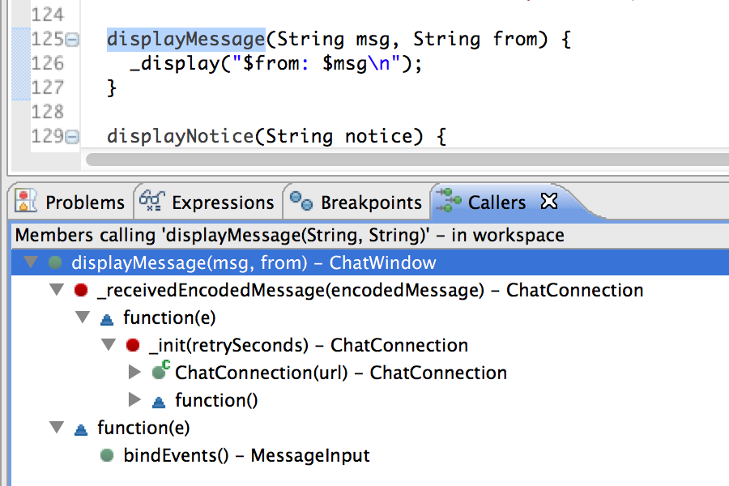

Dart Editor
For an overview, watch this short video on how to use Dart Editor.
Installing Dart Editor
Download Dart Editor, if you haven’t already.
Dart Editor requires the Java runtime. Download the JRE, if needed. Dart Editor requires JRE 6.0 or later.
The default version of Dart Editor is the stable build. It’s automatically updated about once every six weeks. The change log has a list of release dates and features.
The dev channel build, on the other hand, is the latest tested version of the Dart Editor which contains the newest features but may still contain some bugs. If you use the dev channel build, please get new builds frequently, and send feedback about new features and bugs that you encounter.
Updating Dart Editor
Dart Editor can automatically update itself, along with the SDK and Dartium, whenever a new integration build is available. To enable automatic updates, go to Preferences, choose Update, and select Download updates automatically.
If you’d rather choose when to update, make sure Download updates automatically is not selected. Then when you’re ready to update, use the About Dart Editor dialog to download and apply updates.
Using Dart Editor
To get started with Dart Editor, read these:
-
Get Started (the first tutorial in the Dart Tutorials)
Gently introduces you to Dart Editor, from downloading it to creating and running apps. -
Up and Running (a section from Chapter 1 of Dart Up and Running)
Quickly leads you through downloading Dart Editor, running a sample, and creating an app.
For details on using Dart Editor, read this:
- Tips for Using Dart Editor
Teaches how to use Dart Editor—for example, how to set up launches for different browsers.
Features
Dart Editor, with its static analysis engine and direct integration with Dartium, helps you develop, debug, and maintain your apps.

Code completion
Explore the methods and fields available to an object.

Refactoring
Change your code structure without changing the behavior.

Outline view
List the classes, methods, and functions in a simple tree display.

Debugger
Set breakpoints, inspect variables, and step over, into, and out of code.

Static analysis
See warnings when inconsistencies and potential problems are detected.

Find callers
Quickly find all callers for a method, and easily jump to these locations.
Customizing the build
You can add behavior to the Dart Editor build process by creating a build.dart file. See Build.dart and the Dart Editor Build System for details on implementing your own build.dart file.
Filing bugs and feature requests
Click the SEND FEEDBACK link (at the upper right of the Dart Editor window) whenever you notice a problem or have an idea for improving Dart Editor. We’ll open a new issue for you, if appropriate, without disclosing your sensitive or personally identifiable information.
To see existing issues or create a new one directly, go to the Dart Editor issue list.
Troubleshooting
Troubleshooting Dart Editor gives solutions to problems you might encounter when installing, launching, and using Dart Editor.